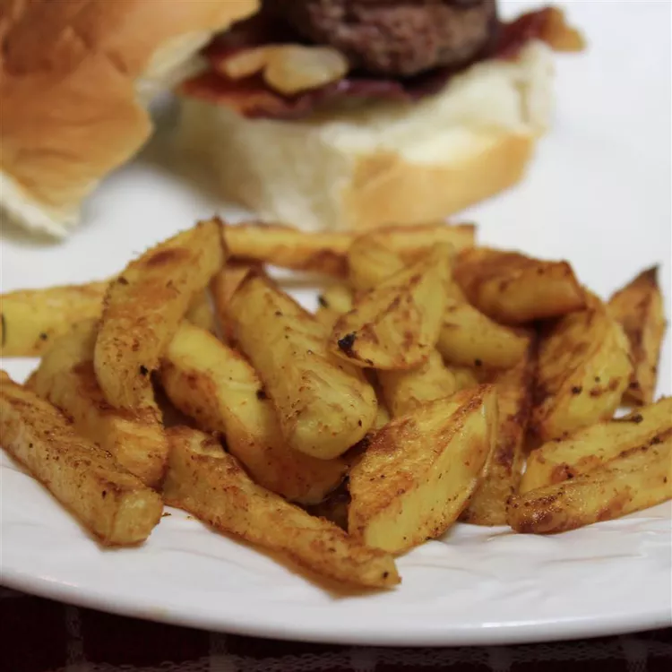

Cajun Baked French Fries

Ingredients
- 1/4 cup olive oil
- 1 teaspoon garlic powder
- 1 teaspoon onion powder
- 1 teaspoon chili powder
- 1 teaspoon Cajun seasoning
- 1 teaspoon sea salt
- 6 large baking potatoes, sliced into thin wedges
Steps
- Preheat oven to 400 degrees F (200 degrees C).
- Mix olive oil, garlic powder, onion powder, chili powder, Cajun seasoning, and sea salt in a large resealable bag.
Add potatoes and toss to evenly coat with seasoned oil.
Spread coated potatoes in 1 layer onto a baking sheet.
- Bake in the preheated oven for 35 minutes.
Stir potatoes with a spatula and continue cooking until crisp, about 10 more minutes.
Back